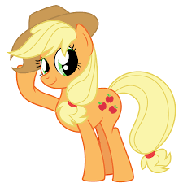

My little pony is a great show for little kids over the age's of 5 and under the age's of 13.
The main character in My Little Pony is Twilight Sparkle.
Twilight Sparkle is a intreresting character who has a pet baby dragon and has met 5 friends a long her jerney set by princess Celestia. Princess Celestia gave
Twilight Sparkle a challenge to get some friends.
Twilight Sparkle, the central character of "My Little Pony: Friendship is Magic," embodies the values of friendship, magic, and personal growth.
As a studious unicorn under Princess Celestia's guidance, Twilight learns that true magic lies in the bonds she forms with her friends: Applejack, Rainbow Dash, Pinkie Pie, Rarity, and Fluttershy.
Through their adventures and challenges, Twilight transforms into an Alicorn princess, symbolizing her growth from a student to a wise leader who values empathy, loyalty, honesty, laughter, generosity, and kindness.
Her journey teaches us that friendship is a powerful force that transcends challenges and fosters personal development.
Princess Celestia and Spike from "My Little Pony: Friendship is Magic" are integral characters in the series, each offering unique contributions to the magical world of Equestria.
Princess Celestia, as the wise and benevolent ruler, guides her subjects with wisdom and compassion, while Spike, the loyal baby dragon, adds humor and heart to every adventure with his bravery and unwavering friendship with Twilight Sparkle.
Together, they exemplify the values of leadership, loyalty, and the magic of true friendship that define the essence of the series.
